ВЕДОМСТВЕННЫЕ СТРОИТЕЛЬНЫЕ НОРМЫ
ПРОЕКТИРОВАНИЕ И
УСТРОЙСТВО
ГРУНТОВЫХ АНКЕРОВ
ВСН 506-88
Минмонтажспецстрой СССР
МИНИСТЕРСТВО
МОНТАЖНЫХ И СПЕЦИАЛЬНЫХ
СТРОИТЕЛЬНЫХ РАБОТ СССР
Москва 1989
РАЗРАБОТАНЫ Всесоюзным научно-исследовательским институтом гидромеханизации, санитарно-технических и специальных строительных работ (кандидаты техн. наук В.Ф. Раюк, В.А. Мишаков, Е.М. Перлей) при участии ГПИ фундаментпроект (Н.К. Коньков, Ю.В. Лабзов); НИиОСП им. Н.М. Герсеванова Госстроя СССР (доктор техн. наук М.И. Смородинов, Я.М. Бобровский); ЦНИИС Минтрансстроя СССР (кандидаты техн. наук Г.А. Скормин и Э.А. Малоян, инж. И.И. Малый)
ВНЕСЕНЫ И ПОДГОТОВЛЕНЫ К УТВЕРЖДЕНИЮ Главным техническим управлением Минмонтажспецстроя СССР
|
Министерство монтажных и специальных строительных работ СССР (Минмонтажспецстрой СССР) |
Ведомственные строительные нормы |
ВСН 506-88 Минмонтажспецстрой СССР |
|
Проектирование и устройство грунтовых анкеров |
Впервые |
Настоящие ВСН распространяются на проектирование, устройство, испытание и контроль постоянных и временных анкеров, закрепление которых осуществляется цементным раствором в скальных и нескальных грунтах, за исключением пылевато-глинистых текучей консистенции, торфов и илов, а также рыхлых песков и просадочных грунтов.
1.1. Грунтовый анкер - устройство для передачи растягивающих нагрузок от закрепляемой конструкции на несущие слои грунта.
Анкер (черт. 1) состоит из трех основных частей: оголовка, анкерной тяги и заделки (корня).
1.2. Оголовок - составной элемент анкера, передающий нагрузку от закрепляемого элемента сооружения или грунта на анкерную тягу.
Оголовок анкера состоит из опорной плиты, передающей нагрузку на конструкцию сооружения, и крепежных элементов (гайка, шайба, опорная плита, колодка и конус), передающих нагрузку от тяги на плиту.
1.3. Тяга - составной элемент анкера, передающий нагрузку от оголовка на заделку.
1.4. Заделка (корень) - часть анкера, передающая нагрузку от тяги на грунт.
1.5. Манжетная труба - труба с выпускными отверстиями, закрытыми резиновыми клапанами-манжетами. Манжетная труба может быть снабжена пакером.
1.6. Пакер - уплотняющее устройство в виде расширяющейся камеры, препятствующее выходу раствора из скважины при инъецировании заделки.
1.7. Инъекционная трубка - устройство для подачи твердеющего раствора под давлением в зону образования заделки.
1.8. Инъектор с двойным тампоном - устройство, обеспечивающее поэтапное инъецирование заделки путем перекрытия участка манжетной трубы с выпускным отверстием.
|
Внесены Главным техническим управлением Минмонтажспецстроя СССР |
Утверждены Минмонтажспецстроем СССР 12 января 1988 г. |
Срок введения в действие 1 января 1989 г. |
Основные конструктивные элементы анкера
а - инъекционный анкер со свободной тягой в зоне заделки (тип II); б - то же с замоноличенной тягой в зоне заделки (тип I); в - анкер с разбуренными уширениями; 1 - скважина; 2 - обойма; 3 - изолирующая оболочка; 4 - антикоррозионная масса; 5 - тяга; 6 - пакер; 7 - заделка (корень); 8 - цементная заделка тяги в манжетной трубе; 9 - манжетная труба (упорная труба); 10 - шайба; 11 - гайка; 12 - опорная плита; 13 - инъекционная трубка; 14 - колодка; 15 - конус; 16 - уширение; 17 - анкеруемая конструкция;
lА - свободная длина анкера; lк - длина заделки (корня); lf - свободная длина анкерной тяги; lv - длина заделки тяги; l - расстояние между уширениями; LА - полная длина анкера; Dс - диаметр скважины; Dк - диаметр заделки; Dу - диаметр уширения
Черт. 1
1.9. Обойма - затвердевший тампонажный раствор между манжетной трубой и стенками скважины.
1.10. Замок - устройство, обеспечивающее передачу усилия от тяги на заделку.
1.11. Упорная труба - стальная труба, работающая на сжатие. Упорная труба воспринимает нагрузку от замка и передает ее на цементный камень заделки.
1.12. Изолирующая оболочка - пластиковая труба, исключающая сцепление тяги с обоймой и заделкой.
1.13. Пята - устройство на концевой части тяги для передачи сжимающих усилий на заделку.
1.14. фиксатор - устройство, предназначенное для фиксации анкера по центру скважины.
1.15. Разделитель - устройство, предназначенное для фиксации положения тяги в защитной оболочке, манжетной трубе или канатов в замковой трубе.
1.16. lf - свободная длина анкерной тяги - часть длины тяги, отделенная от окружающего грунта или цементного раствора. Свободная длина тяги расположена между нижней точкой закрепления тяги в оголовке и верхней точкой ее закрепления в замке.
1.17. lff - эффективная свободная длина анкерной тяги - часть длины тяги, заключенная между нижней точкой закрепления тяги в оголовке и условной точкой, лежащей в пределах замка.
1.18. lА - свободная длина анкера - часть анкера, расположенная между заделкой и оголовком.
1.19. lк - длина заделки - часть длины анкера, в пределах которой усилие передается грунту.
1.20. LА - полная длина анкера.
1.21. Fа - площадь поперечного сечения тяги.
1.22. lv - длина заделки тяги - часть длины тяги, в пределах которой усилие передается цементному камню заделки.
1.23. Пробные испытания - испытания, проводимые с целью установления принципиальной пригодности способа анкерования и приемлемости выбранной конструкции анкера, уточнения технологии и расчетных нагрузок на анкер.
1.24. Контрольные испытания - испытания, проводимые с целью установления соответствия фактической несущей способности расчетной нагрузки.
1.25. Приемочные испытания - испытания, проводимые с целью проверки несущей способности каждого изготовленного анкера.
1.26. Pw - расчетная рабочая нагрузка на анкер - наиболее неблагоприятная комбинация внешних нагрузок на закрепляемую конструкцию c учетом преднапряжения анкера.
1.27. Pа - расчетная предельная нагрузка на анкер, определяемая из расчета устойчивости системы "сооружение - анкер - грунт".
1.28. Pd - расчетная предельная нагрузка на анкер, определяемая из расчета несущей способности анкера по грунту.
1.29. P0 - начальная нагрузка на анкер во время испытаний.
1.30. Pб - блокировочная нагрузка, равная усилию закрепления анкера на конструкции после проведения испытаний.
1.31. Ри - предельная испытательная нагрузка, вызывающая напряжения в тяге, равные 95 % пределу текучести тяги.
1.32. Рв - предельная нагрузка, вызывающая напряжения в тяге, равные пределу прочности на растяжение.
1.33. Рк - предельная нагрузка, вызывающая потерю несущей способности по грунту.
1.34. Ркр - предельная нагрузка, при которой не возникает больших остаточных деформаций анкера.
1.35. РS - Предельная нагрузка анкера, соответствующая коэффициенту ползучести КS = 2 мм.
1.36. DlS - остаточная деформация анкера.
1.37. Dly - упругая деформация анкера.
1.38. Dtp - расчетное удлинение свободной длины тяги при нагрузке Ри.
1.39. Eт - модуль упругости материала тяги анкера.
1.40. КS - коэффициент ползучести - деформация анкера в грунте при постоянной нагрузке.
1.41. Коэффициенты надежности:
gf - по нагрузке;
gm - по материалу;
gg - по грунту;
gn - по назначению сооружения.
1.42. gc - коэффициент условий работы.
2.1. Грунтовые анкеры следует применять для крепления ограждений котлованов, днищ доков и опускных колодцев, подпорных стен и стен подземных сооружений, оползневых склонов и откосов, фундаментов высоких сооружений и др.
2.2. Анкеры делятся: по направлению тяги - наклонные и вертикальные; по способу образования скважин - буровые с проходкой скважин с обсадными трубами, под глинистым раствором, шнеком и с погружением обсадной трубы забивкой или вдавливанием; по способу устройства заделки анкера - инъекционные (заделка образована подачей цементного раствора под избыточным давлением), с разбуренными уширениями, цилиндрические (скважина заполняется раствором без избыточного давления); по материалу анкерных тяг - из стержневой и канатной (прядевой) арматуры; сроку службы - временные (до 2 лет) и постоянные (анкеры, предназначенные для работы в течение всего срока службы сооружения); по предварительному натяжению - предварительно-напрягаемые анкеры (тяга которых закреплена на оголовке с предварительным натяжением, превышающим 30 % рабочей нагрузки) и анкеры без предварительного напряжения; по способу связи анкерной тяги с цементным камнем заделки - с замоноличенной тягой в зоне заделки (тип I) и со свободной тягой в зоне заделки (тип II).
2.3. При проектировании и устройстве грунтовых анкеров необходимо пользоваться кроме настоящей инструкции нормативными документами, перечисленными в обязательном приложении 1.
3.1.1. Проектирование анкеров является неотъемлемой составной частью проектирования сооружения в целом. Статическая схема сооружения, конструктивное и объемно-планировочное решения, плановая и высотная привязки анкеров, тип и конструкция анкеров должны приниматься с учетом результатов инженерных изысканий на площадке строительства, на основе расчета системы "сооружение - основание - примыкающие здания" по двум группам предельных состояний (по устойчивости и деформациям), на основе пробных испытаний анкеров и технико-экономических расчетов вариантов.
3.1.2. При проектировании анкеров рассчитывают:
общую устойчивость сооружения;
несущую способность анкера в целом по грунту и материалу;
прочность отдельных элементов (оголовок, замок, упорная труба, цементный камень, закрепление замка в корне, заделка тяги в манжетной трубе или пяте и т.д.), входящих в состав анкера.
3.1.3. При проектировании анкеров необходимо иметь следующие исходные данные:
генеральный план площадки с нанесенными на нем коммуникациями и контурами проектируемого сооружения, прилегающих зданий и сооружений, а также отметками их заложения;
габариты, назначение, класс и эксплуатационные нагрузки проектируемого сооружения;
конструкции фундаментов и несущих элементов прилегающих сооружений, а также нагрузки на них;
отчет по инженерно-геологическим изысканиям на строительной площадке, который должен содержать геологические разрезы, отражающие все грунтовые прослойки и напластования; мощности слоев и их наклон, оценку возможного наличия в грунтах крупных включений валунов с их качественной характеристикой (размер, прочность и др.);
физико-механические характеристики грунтов, слагающих толщу строительной площадки; сезонные колебания уровня подземных вод; степень агрессивности подземных вод и прогноз ее повышения на период эксплуатации анкеров, оценку морозного пучения и взбухания при строительстве и эксплуатации.
3.1.4. При проектировании анкеров следует всесторонне оценить и учесть влияние устройства и испытания анкеров на осадки фундаментов примыкающих зданий и сооружений, систему подземных коммуникаций, экологию земельного участка с точки зрения будущего строительства и др.
3.1.5. Расположение ярусов анкерования по высоте ограждений котлованов и подпорных стен, число ярусов и расстояние между анкерами в ярусе следует определять исходя из: нагрузок, действующих на анкеруемое сооружение; допустимых осадок фундаментов примыкающих зданий, полученных на основе расчета; технико-экономического сравнения вариантов и результатов испытаний опытных анкеров.
3.1.6. При выборе типа и конструкции анкеров необходимо учитывать возможности подрядной строительной организации, ее опыт и оснащенность специальным оборудованием и материалами для устройства и испытания анкеров.
3.1.7. B проекте должны быть предусмотрены конструктивные и технологические мероприятия по проведению пробных испытаний анкеров.
3.1.8. Длина и наклон анкеров определяются из расчета на устойчивость всей системы, состоящей из сооружения анкеров и грунтового массива.
3.1.9. Производится расчет устойчивости на сдвиг грунта по круглоцилиндрическим поверхностям скольжения и на опрокидывание вокруг низа стенки при сдвиге грунта по плоским поверхностям скольжения (метод Кранца).
3.1.10. Заделку анкеров, применяемых для закрепления ограждений котлованов и подпорных стен, следует располагать за воображаемой плоскостью, проходящей через низ стенки под углом 45°.
3.1.11. Глубина от поверхности грунта до начала заделки анкеров должна быть не менее 4 м.
3.1.12. Длину анкеров, применяемых для закрепления днищ сооружений от всплытия, следует назначать такой, чтобы середина заделки анкеров находилась на уровне условной границы АВ (черт. 2).
Граница АВ определяется из условия устойчивости против всплытия сооружения и присоединенной к нему массы грунта толщиной Нп под действием взвешивающей нагрузки (с учетом веса сооружения, сил трения по боковой поверхности сооружения и присоединенной массы грунта, нагрузок на сооружение и т.д.).
3.1.13. Расстояние между анкерами в зоне их заделки должно быть не менее 1,5 м. При меньших расстояниях между оголовками анкеров следует обеспечивать предельное расстояние между заделками, изменяя наклон анкеров или их длину.
Расчетная схема к определению длины анкеров, удерживающих сооружение от всплытия
Черт. 2
Если интервал между заделками анкеров менее 1,5 м, необходимо в пробных испытаниях проводить опытную проверку несущей способности анкеров при групповом испытании в количестве трех или пяти анкеров для оценки взаимного их влияния на несущую способность.
3.1.14. Расстояние от заделки анкера до фундаментов примыкающих зданий или канализационных систем должно быть не менее 3 м.
3.1.15. Заделку анкеров следует располагать преимущественно в однородных песчаных грунтах.
3.1.16. Длина заделки должна быть не менее 3 и не более 10 м. Рациональная длина заделки инъекционных анкеров в песчаных грунтах 4-6 м, в пылевато-глинистых - 5-7 м.
3.1.17. При проектировании анкеров следует предусматривать такие конструктивные мероприятия, которые обеспечивают работоспособность строительной конструкции, удерживаемой группой анкеров, при выходе из строя одного анкера из этой группы.
3.1.18. При проектировании сооружений, закрепленных постоянными анкерами, следует предусматривать мероприятия по осуществлению контроля за напряженно-деформированным состоянием как самой конструкции, так и грунтовых анкеров. Периодический контроль как во время строительства, так и при эксплуатации должен включать измерение нагрузок на анкеры, деформации и смещения закрепленной анкерами конструкции.
3.1.19. Количество анкеров, на которых осуществляется контроль нагрузки, следует назначать в зависимости от их общего количества в следующей пропорции:
при общем количестве до 50 анкеров - 10 %;
" " " " 100 " - 7 %;
" " " свыше 100 " - 5 %.
3.1.20. Постоянные анкеры не следует применять в грунтах, обладающих сильной и очень сильной агрессивностью к бетону.
3.1.21. Постоянные анкеры, как правило, следует конструировать со свободной тягой в заделке (тип II), так как в этом случае при работе анкера цементный камень в заделке работает на сжатие, что исключает появление трещин в цементном камне и, как следствие, предохраняет анкерную заделку от коррозии.
3.1.22. Инъекция может осуществляться при помощи инъекционной трубки, манжетной колонны или через обсадные трубы.
3.1.24. Цилиндрические анкеры следует применять в скальных грунтах. Анкеры с уширением разбуренным инвентарным расширителем применяют преимущественно в суглинках и глинах твердой и полутвердой консистенции. Для повышения несущей способности анкера следует выполнять несколько уширений, расстояния между которыми (l) должны удовлетворять условию: l = 3Dy, где Dy - диаметр уширения.
3.1.25. Тягу следует проектировать из стержневой арматуры класса А-IV, A-V, А-III, упрочненной вытяжкой (ГОСТ 5781-82 и ЧМТУ 1-177-67), отдавая предпочтение термически упрочненной стали с винтовым профилем (ТУ 14-2-86-86) или канатной (прядевой) арматуре, применяемой в предварительно напряженных железобетонных конструкциях (ГОСТ 13840-68 и ТУ 14-4-22-71).
3.1.26. При изготовлении анкерных тяг из стержневой арматуры класса А-IV, A-V, А-III, на конце которых приваривается шпилька ванной или контактной стыковой сваркой, тяга должна пройти предварительное (до установки анкера в скажину) испытание на стенде с целью определения прочности сварки на растяжение от нагрузки.
3.1.27. Для анкеров с тягами из стержневой арматуры гайки и шайбы следует проектировать со сферической поверхностью, чтобы исключить перенапряжение материала тяги от внецентренного приложения нагрузки.
3.1.28. Заделку анкера в грунте следует создавать нагнетанием цементного раствора из портландцемента, воды и, при необходимости, пластифицирующих добавок.
В качестве пластифицирующих добавок применяют СДБ или мылонафт. СДБ вводят в количестве 0,2 % сухого вещества от массы цемента, а мылонафт - 0,12-0,15 %.
3.1.29. Цементный раствор должен обладать оптимальной вязкостью и минимальным водоотделением.
3.1.30. Водоцементное отношение при достижении оптимальной вязкости следует принимать в пределах 0,45-0,55. Натяжение анкеров необходимо производить через 3-5 сут, но не ранее, чем будет достигнута прочность цементного камня 20 МПа.
3.1.31. Применение пуццолановых, глиноземистых и шлаковых портландцементов не допускается.
3.1.32. Марка цемента, применяемого для затворения растворов при устройстве анкеров, должна быть не ниже 400.
3.1.33. Для затворения цементных растворов не допускается применение морской воды или воды, содержащей хлоридов свыше 300 мг на 1 л.
3.1.34. Тяга для центрирования в скважине должна иметь по всей длине фиксаторы на расстоянии 1,5-2,0 м друг от друга. Их следует выполнять из полосовой стали сечением 20´4 мм в виде пяти скоб, равномерно распределенных по периметру тяги, или из отрезков пластиковых труб с продольными разрезами по периметру.
3.1.35. Постоянные анкеры по всей длине должны иметь равнозначную по надежности антикоррозионную защиту, степень которой следует назначать в зависимости от продолжительности эксплуатации и уровня агрессивности среды.
3.1.36. При отсутствии грунтовых вод, неагрессивности среды и сроке эксплуатации до двух лет можно применить анкеры (тип I) без упорной трубы и специальной антикоррозионной защиты, ограничиваясь защитой в зоне заделки цементным камнем толщиной 20 мм, а в свободной зоне анкера - цементно-бентонитовым материалом.
3.1.37. В сильноагрессивных средах (средняя интенсивность коррозии свыше 0,5 мм/год) при сроке эксплуатации более двух лет следует применять усиленную антикоррозионную защиту.
3.1.38. В среднеагрессивных средах (средняя интенсивность 0,1-0,5 мм/год) при сроке эксплуатации более двух лет следует применять нормальную антикоррозионную защиту.
3.1.39. В слабоагрессивных средах (средняя интенсивность коррозии до 0,1 мм/год) при сроке эксплуатации до двух лет допускается легкая антикоррозионная защита.
3.1.40. Усиленная антикоррозионная защита тяги в области заделки должна включать: цементный камень толщиной более 20 мм и упорную трубу (ГОСТ 8731-74 и ГОСТ 8733-74), работающих на сжатие: оболочку из полиэтилена (ГОСТ 226891-77, ГОСТ 18599-83 и ГОСТ 19034-82); заполняющую массу (ЭКН, герметик Гидропроекта или гидрофобный заполнитель ЛЗ-КI).
3.1.41. Упорная и манжетные трубы при усиленной антикоррозионной защите должны защищаться металлизационным покрытием алюминия толщиной 200 мкм или слоем цементного камня, работающего на сжатие, толщиной 3 см.
3.1.42. Замковая труба должна защищаться металлизационным покрытием алюминия толщиной 200 мкм.
3.1.43. Усиленная антикоррозионная защита в свободной части должна состоять из слоя глиноцементного камня, защитной полиэтиленовой оболочки и антикоррозионной массы.
3.1.44. Антикоррозионная защита оголовка всех постоянных анкеров включает в себя: защитный гидроизоляционный колпак и антикоррозионный состав, заполняющий свободное пространство скважины и колпака.
3.1.45. Перед нанесением металлизационного покрытия с защищаемой поверхности стали должна быть полностью удалена ржавчина.
3.1.46. Металлизационное покрытие следует предохранять от механических повреждений при складировании, транспортировании и установке анкера.
3.1.47. Необходимая толщина защитного слоя заполняющего состава между тягой и защитной оболочкой должна обеспечиваться установкой разделителя в виде проволоки заданной толщины, намотанной винтообразно на тягу.
3.1.48. При нормальной антикоррозионной защите анкеров (в среднеагрессивных средах) манжетная и упорная трубы могут не иметь металлизационного покрытия.
3.1.49. В расчетах следует рассматривать потенциальный механизм возможного разрушения для всех основных составляющих материалов и поверхностей раздела (в грунтовом массиве; на контактах "грунт - цементный камень", "цементный камень - тяга или упорная труба", "тяга - оголовок", "оголовок - закрепляемая конструкция", а также следует назначать соответствующий коэффициент надежности, который представляет собой отношение соответствующей предельной нагрузки к рабочей нагрузке.
3.1.50. Коэффициенты надежности по материалу gm и грунту gg при расчете по первому предельному состоянию следует принимать равными: gm = 2,0 и gg = 2,5 - для постоянных анкеров; gm = 1,6 и gg = 2,0 - для временных.
Коэффициент надежности по нагрузке gf = Ри/Рw принимается равным: для постоянных анкеров - 1,5; для временных 1,25.
3.1.51. Динамические воздействия не должны превышать рабочую нагрузку Рw более чем на 20 %.
3.1.52. В составе проекта должны быть разработаны разделы ППР и раздел проведения опытных, контрольных и приемочных испытаний.
Расчет устойчивости ограждений котлованов и подпорных стен, закрепленных грунтовыми анкерами
3.2.1. Оптимальное положение анкера в грунте подбирают в процессе расчета устойчивости системы "стена - грунт - анкер" на опрокидывание вокруг низа анкеруемой стенки исходя из условия, что прочность грунтов на сдвиг в системе преодолена и образуется "глубокая линия скольжения" (метод Кранца).
3.2.2. За "глубокую линию скольжения" принимают (черт. 3) прямую между точкой поворота анкеруемой стенки и точкой с, расположенной посередине длины заделки анкера.
Расчетная схема определения устойчивости ограждающей стенки по "глубокой линии скольжения" (метод Кранца)
Черт. 3
3.2.3.
Построенный из условия равновесия заштрихованной призмы авсе силовой
многоугольник включает в себя вес грунта G,
равнодействующую активного давления Eа на анкеруемое
сооружение, силу реакции RS, несущую
способность анкера Ра и равнодействующую активного давления
грунта 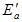
3.2.4. Коэффициент устойчивости Ку системы "стена - грунт - анкер" на опрокидывание определяют из отношения
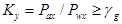
3.2.5. Устойчивость на опрокидывание многократно заанкерованных конструкций проверяют по "глубоким линиям скольжения", соответствующим расположению анкеров (справочное приложение 2).
Расчет несущей способности анкеров
3.2.6. Расчетная нагрузка на анкер по несущей способности основания Рd должна устанавливаться из условия
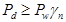
где gn - коэффициент надежности по назначению сооружения, принимаемый равным: 1,4 - для постоянных анкеров; 1,2 - для временных.
3.2.7. Несущую способность инъекционных анкеров по грунту основания определяют по формуле
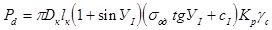
где Dк - диаметр заделки (корня) анкера;
УI и cI - расчетные средневзвешенные значения по длине заделки: угол внутреннего трения и удельное сцепление грунта соответственно;
sод - усредненное по боковой поверхности заделки анкера природное напряжение грунта, определяемое по формуле (4);
Кр - коэффициент, зависящий от отношения диаметра скважины Dс к диаметру заделки Dк, природного напряжения, прочностных и деформационных характеристик грунта, находящегося в зоне заделки анкера, определяемый по формуле (5);
gс - коэффициент условий работы, принимаемый для песчаных грунтов равным 0,72, для пылевато-глинистых - 0,64.
3.2.8. Величину sод определяют по формуле
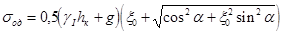
где gI - средневзвешенное значение по глубине hк удельного веса грунта с учетом взвешивающего действия воды;
hк - глубина заложения центра заделки анкера от поверхности грунта;
x0 - коэффициент бокового давления грунта в природном состоянии (покоя), принимаемый для песков и супесей равным x0 = 0,43; для суглинков x0 = 0,55; для глин x0 = 0,72;
g - приведенная к равномерно-распределенной в уровне центра заделки нагрузка на поверхности и от соседних фундаментов зданий;
a - угол наклона анкера к горизонтали.
3.2.9. Величину Кр определяют по формуле
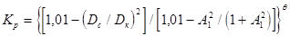
где 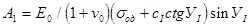
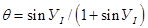
E0, v0 - cредневзвешенные значения по длине заделки модуля деформации грунта и коэффициента Пуассона соответственно.
3.2.10. Для определения величины Dк задаются отношением Dс/Dк равным 0,9; 0,6 и 0,3. По этим значениям Dс/Dк и заданному значению lк, определяют величины Pd по формуле (3).
Составляют график зависимости Pd от Dс/Dк. По этому графику, зная величину Pd, находят отношение Dс/Dк и по нему величину Dк, которая должна быть обеспечена нагнетанием необходимого объема цементного раствора в скважину.
3.2.11. Необходимый объем цементного раствора, нагнетаемого в скважину для анкеров с пакером или манжетной трубой, определяют по формуле
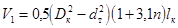
где n = В/Ц - весовое водоцементное отношение;
dт - диаметр тяги или манжетной трубы в зоне заделки анкера.
Для анкеров с инъекционной трубкой при повторном инъецировании
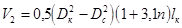
3.2.12. Расчет несущей способности грунтовых анкеров с разбуренным уширением следует определять по формуле
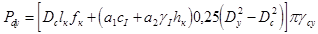
где 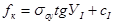
а1 и а2 -коэффициенты, определяемые по табл. 9 СНиП 2.02.03-85;
Dу - диаметр уширения;
gсу - коэффициент условной работы, принимаемый равным для пылевато-глинистых грунтов - 0,7, для текучепластичных - 0,6.
Расчет прочности материала тяг анкеров
3.2.13. Площадь сечения тяги анкера Fа, должна удовлетворять условию:
а) для постоянных анкеров
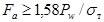
б) для временных
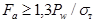
Временный анкер со стержневой арматурой
3.3.1. Анкер (черт. 4) состоит из тяги 2, изолирующей пластмассовой оболочки 3, оголовка 1, заделки 4, фиксаторов 6 и пяты 5.
Временный анкер со стержневой арматурой.
Черт. 4
3.3.2. Тяга анкера преимущественно должна быть выполнена из стержневой термически упрочненной стали с винтовым профилем или из стержневой арматуры класса А-IV, А-V и А-III, упрочненной вытяжкой.
3.3.3. Для закрепления анкера на конструкции изготавливают из стального литья марки 35ГЛ или 20Л (ГОСТ 977-75) гайки, шайбы и опорные плиты со сферическими поверхностями.
3.3.5. На конце тяги приваривают пяту, состоящую из: стального диска толщиной 10 мм и диаметром на 10 мм меньше внутреннего диаметра обсадных труб; коротышей, приваренных к тяге и диску; колпака из листовой стали толщиной 1-2 мм, приваренного к диску.
3.3.6. Заделку анкера можно выполнять способом фирмы "Бауэр" - путем поэтапного нагнетания цементного раствора в скважину под давлением через обсадные трубы или повторной инъекцией цементного раствора по стационарной инъекционной трубке (см. п. 3.1.23), а также без инъекции, свободной заливкой цементного раствора при устройстве анкера в скальных грунтах или с предварительным разбуриванием уширений в пылевато-глинистых грунтах.
Временный анкер с канатной (прядевой) арматурой
3.3.7. Анкер (черт. 5) включает в себя: тягу и, в случае применения повторной инъекции, стационарную инъекционную трубку; оголовок, состоящий из опорной плиты, колодки и конуса; заделку, замок, разделители и пяту.
Временный анкер с канатной (прядевой) арматурой
1 - конус; 2 - колодка; 3 - опорная плита; 4 - закрепляемая конструкция; 5 - изолирующая оболочка; 6 - тяга; 7 - замок; 8 - цементная заделка; 9 - проволочная скрутка; 10 - разделители; 11 - инъекционная трубка; 12 - пята
Черт. 5
3.3.8. Тяга состоит из 3-12 семипроволочных канатов (прядей) 15К7.
3.3.10. Разделители в зоне заделки следует изготавливать из стальных отрезков труб длиной 20 мм и толщиной 1-2 мм. Разделители должны обеспечивать удаление арматуры тяги от инъекционной трубки не менее чем на 15 мм.
3.3.11. Колодку изготавливают из стали Ст5 (ГОСТ 380-71), а конус - из стали 40Х (ГОСТ 4543-71).
3.3.12. Заделку анкера можно выполнять инъекцией цементного раствора через обсадные трубы по мере их извлечения или повторной инъекцией раствора через стационарную инъекционную трубку, а также свободной заливкой цементного раствора в скважину при устройстве анкера в скальных грунтах или с предварительным разбуриванием уширений в пылевато-глинистых грунтах.
Пример инъекционного анкера с тягой из четырех канатов 15К7 показан на черт. 5.
Временный инъекционный анкер с манжетной трубой при наружном расположении тяги из канатной арматуры
3.3.13. Анкер (черт. 6) включает в себя манжетную трубу 4 с пакером 5, тягу 2 с изолирующей оболочкой 3 в свободной части анкера, замок 6, оголовок 1 и разделители 7. Для инъекции цементного раствора используют инвентарный инъектор.
3.3.16. манжету следует выполнять литой из эластичной резины толщиной 3-5 мм. Ширина манжеты, как правило, 100 мм.
3.3.17. Пакер в виде рукава длиной 1,5-2 м, диаметром, равным 1,5-2 диаметра скважины, следует изготавливать из прочного тканевого материала, способного фильтровать воду. Закрепление концов пакера на манжетной трубе должно быть надежным и герметичным. Под пакером в манжетной трубе следует выполнять выпускные отверстия, закрытые манжетой.
3.3.18. Тягу следует выполнять из арматурных канатов (прядей) 15К7, равномерно размещенных вокруг манжетной трубы.
3.3.19. Замок следует выполнять в пределах заделки анкера в соответствии с п. 3.3.9.
3.3.20. Разделители следует устанавливать на расстоянии 15-20 мм от края манжеты.
Временный инъекционный анкер с манжетной трубой при наружном расположении тяги
Черт. 6
1 - манжетная труба; 2 - тампон; 3 - трубка инъектора; 4 - манжета
Черт. 7
3.3.21. Изолирующую оболочку (для исключения сцепления тяги с затвердевшим обойменным раствором в пределах свободной длины анкера) следует выполнять из пластмассовых труб (ГОСТ 226893-77, ГОСТ 18599-83).
Нижняя часть оболочки должна быть изолирована от попадания внутрь оболочки обойменного раствора (возможна заделка нижнего конца оболочки цементным раствором на длине 0,5 м).
3.3.22. Инъектор (черт. 7) следует изготавливать из стальной цельнотянутой трубки, рассчитанной на давление не менее 10 МПа, с проходным отверстием диаметром 10 мм, нижний конец которой заглушен. На трубке закрепляют саморазжимающиеся тампоны из кожи или литой резины.
3.3.23. Анкер следует применять для ответственных сооружений с высокой несущей способностью во всех грунтах, за исключением пылевато-глинистых текучей консистенции, торфов и илов.
Постоянный инъекционный анкер со стержневой арматурой и упорной трубой
3.3.24. Анкер (черт. 8) включает в себя тягу 15, пяту 11, упорную трубу 12 с фиксатором 13 и муфтой 16, связанную с трубой оболочкой 14, верхний конец которой вместе с уплотнительным кольцом 1 размещен в трубе 2, соединенной со сферической шайбой 4, закрытой колпаком 7, свободное пространство которого заполнено антикоррозионной массой 6, причем зазор между тягой 15 и упорной трубой или поливинилхлоридной трубой-оболочкой 14 заполнен антикоррозионным составам 8, нагнетаемым через отверстие 18 в пяте 11, закрытое пробкой 19. Для обеспечения защитного слоя цементного раствора на торце пяты 11 приварена скоба 9.
3.3.25. Тягу 15 следует выполнять в соответствии с п.п. 3.3.2 и 3.3.4.
3.3.26. Упорную трубу 12 следует изготавливать из бесшовной стальной трубы диаметром 76 мм и толщиной стенки 8-16 мм. Упорная труба по всей длине с наружной стороны имеет нарезку с шагом 6 мм, глубиной 1,5-2 мм в виде трапецеидальной резьбы, сделанной для лучшего сцепления трубы с цементным раствором.
3.3.27. Пяту 11 следует выполнять в виде винтовой муфты диаметром, равным диаметру упорной трубы длиной 170 мм, если тяга выполнена из арматурного стержня с винтовым профилем в соответствии с ТУ 14-2-286-86.
3.3.28. Если тяга выполнена из стержневой арматуры класса A-IV, A-V или А-III, то пяту следует выполнять в виде диска толщиной 15-30 мм, подкрепленного коротышами 10. На пяту надевают колпак 17, выполненный из стали, толщиной 1-2 мм. Пяту приваривают к упорной трубе герметично.
3.3.29. По длине упорной трубы 12 с расстоянием 2 м друг от друга приварены фиксаторы 13.
3.3.30. Муфту 16 приваривают герметично к верхнему концу упорной трубы 12.
Постоянный инъекционный анкер с упорной трубой из стержневой арматуры
Черт. 8
3.3.31. Трубу-оболочку 14 следует выполнять на свободной части тяги 15 из полиэтиленовой или поливинилхлоридной трубы диаметром 50-54 мм и толщиной стенки 4-5 мм, обеспечивая герметичное соединение с верхним концом упорной трубы 12. Соединение трубы-оболочки по длине следует выполнять с помощью винтового муфтового соединения на поливинилхлоридном клее. Монтаж стыка полиэтиленовой или поливинилхлоридной трубы с муфтой 16 упорной трубы 12 следует осуществлять только после размещения внутри упорной трубы 12 тяги 15 и ввертывания последней в винтовую муфту пяты 11.
3.3.32. Зазор между тягой 15 и упорной трубой 12, а также тягой и трубой-оболочкой 14 следует заполнять антикоррозионным составом через впускное отверстие 18. Качество заполнения контролируют по выходу антикоррозионного состава через верх трубы-оболочки 14.
3.3.33. Оголовок анкера следует выполнять в виде опорной плиты 3, сферической опорной шайбы 4 и сферической гайки 5.
3.3.34. Антикоррозионную защиту оголовка следует выполнять в виде соединения с опорной шайбой 4 стальной трубы 2 с уплотнительным кольцом 1, надеваемым на верхний конец трубы-оболочки 14, и устанавливаемого поверх гайки 5 защитного колпака 7, в свободное пространство которого нагнетают антикоррозионную массу. В качестве антикоррозионной массы следует использовать смазку ПВК (пушечная) в соответствии с ГОСТ 19537-83.
3.3.35. Анкер следует применять при цементации заделки через обсадную трубу или повторной инъекцией при включении в конструкцию анкера стационарной инъекционной трубки (см. п. 3.1.23).
Постоянный инъекционный анкер с манжетной трубой при внутреннем расположении анкерной тяги из канатной арматуры
3.3.36. Анкер (черт. 9) включает в себя оголовок, манжетную трубу 9 с пакером 10, трубчатый замок 13 с концевым патрубком 14, тягу 12 с изолирующей оболочкой 11 и нагнетательной трубкой 15. Для инъекции цементного раствора в скважину используют инвентарный инъектор.
3.3.37. Манжетную трубу 9 следует изготавливать из бесшовных стальных труб (в зоне заделки анкера) и пластмассовых (в свободной зоне анкера) внутренним диаметром, обеспечивающим свободную установку тяги. Манжетная труба по всей длине должна иметь одинаковый внутренний диаметр без выступающих швов.
3.3.39. Трубчатый замок 13 следует выполнять из стальной трубы длиной 1,0-1,5 м (диаметром, как минимум, на 10 мм больше диаметра манжетной трубы) с закрепленными в ней на цементном растворе арматурными канатами в виде волнообразной конструкции 8. Концевой патрубок 14 должен иметь длину, равную шагу манжет, и диаметр, равный диаметру манжетной трубы.
Постоянный инъекционный анкер с манжетной трубой при внутреннем расположении анкерной тяги из канатной арматуры
Черт. 9
3.3.40. Изолирующую оболочку 11 тяги следует выполнять в виде рукава или обмотки липкой лентой.
3.3.41. Оголовок следует выполнять в виде опорной плиты 1, колодки 2 и запрессовывающего конуса 3 с пазами для размещения арматурных канатов 4 и закрытым пробкой центральным отверстием для нагнетания антикоррозионного состава после натяжения.
Оголовок закрывают защитным колпаком 5, укрепленным винтами 7. Под колпак 5 нагнетают антикоррозионную массу 6.
Постоянный инъекционный анкер с манжетной трубой при внутреннем расположении тяги из стержневой арматуры
3.3.42. Анкер (черт. 10) включает в себя манжетную трубу 1 с пакером 2, тягу из стержневой арматуры 6 с изолирующей оболочкой 3 в свободной части тяги, пяту 7 и оголовок. Для инъекции цементного раствора в скважину используют инъектор.
Постоянный инъекционный анкер с манжетной трубой при внутреннем расположении тяги из стержневой арматуры
Черт. 10
3.3.43. Манжетную трубу следует изготавливать в соответствии с пп. 3.3.14 и 3.3.15.
3.3.44. Тяга анкера выполнена из стержневой арматуры (см. пп. 3.3.2 и 3.3.4).
3.3.45. Тяга анкера на всем ее протяжении, за исключением нижнего конца длиной 1,5 м, заключена в изолирующую оболочку, выполненную из полиэтиленовой или поливинилхлоридной трубы диаметром 50 мм.
Для закрепления изолирующей оболочки на нижнем конце тяги (на расстоянии 1,5 м от конца) приварена стальная муфта 5 сплошным швом, в которую ввернута изолирующая оболочка.
В муфту заподлицо с ее поверхностью вварена втулка 4 с внутренней резьбой, в которую ввертывают штуцер для нагнетания антикоррозионного состава в изолирующую оболочку.
4.1.1. Устройство грунтовых анкеров должно производиться в соответствии с проектом и ППР, которые должны содержать: данные об инженерно-геологических и гидрогеологических условиях площадки; сведения о подземных коммуникациях, стройгенплан с указанием мест изготовления и складирования анкеров; данные о закрепляемом сооружении; расположение анкеров с указанием их конструкции, глубины заложения заделки, угла наклона к горизонту, длины анкеров, диаметров скважин и допустимых отклонений по направлениям; данные пробных испытаний анкеров; перечень бурового, инъекционного, смесительного и другого оборудования для производства работ, а также оборудования для натяжения анкеров; технологическую последовательность выполнения работ по устройству анкеров с указанием параметров инъекции (общее количество нагнетаемого раствора, расход, давление и т.п.); программу испытаний анкеров с указанием расчетной нагрузки, допускаемой на анкер, максимальной испытательной нагрузки и блокировочной нагрузки, при которой следует закреплять анкер на конструкции; мероприятия по проведению испытаний с включением контроля нагрузок; мероприятия по обеспечению техники безопасности, включая работы по натяжению при испытаниях.
4.1.2. Материалы, изделия конструкции, применяемые при изготовлении и устройстве анкеров, должны соответствовать проекту, требованиям стандартов технических условий. Замена материалов и изменения конструкции должны производиться только по согласованию с проектной организацией.
4.1.3. Все работы по изготовлению и устройству анкеров следует выполнять в соответствии с действующими строительными нормами и правилами с составлением актов на скрытые работы. В акты должны быть включены: количество и состав инъецируемого раствора, давление и расход при инъецировании заделки по этапам, границы между слоями грунта, устанавливаемые при бурении скважин, уровень грунтовых вод и др.
4.1.4. Во время транспортирования, хранения, подъема и установки анкеры следует надежно предохранять от возможных повреждений.
4.1.5. Способы бурения скважин должны предусматривать мероприятия, снижающие разуплотнение грунта стенок скважин.
В зависимости от инженерно-геологических условий площадки, конструкции и технологии устройства анкеров бурение скважин следует выполнять с использованием инвентарных обсадных труб или под глинистым раствором.
В устойчивых грунтах допускается бурение скважин без крепления их стенок.
4.1.6. При вращательном бурении следует контролировать соответствие действительного напластования грунтов проектному. В случае существенных отклонений необходимо ставить в известность проектную организацию.
4.1.7. Скважины следует бурить станками, специально предназначенными для устройства анкеров, a также буровым оборудованием, обеспечивающим устройство скважин в соответствии с проектом (справочное приложение 3).
4.1.8. Перед установкой арматуры анкера скважина должна быть очищена от шлама.
4.1.9. При бурении через грунтовые воды, находящиеся под артезианским давлением, или в случае наличия метана необходимо применять защитные меры (пакер, тяжелые буровые растворы, предварительная цементация и понижение уровня воды).
4.1.10. В скальных грунтах перед установкой анкера скважина должна быть испытана на водонепроницаемость.
4.1.11. В сильно обводненных и трещиноватых грунтах, когда раствор заделки может вытекать, скважину необходимо зацементировать, пробурить вновь и провести повторное испытание на водонепроницаемость. Допускается утечка воды о расходом 1 л/мин на 1м длины скважины при давлении 1 МПа на поверхности.
4.1.12. Опускать арматуру анкера в скважину следует плавно, без рывков. После установки арматуры анкера в проектное положение она должна быть закреплена по центру устья скважины.
4.1.13. В анкерах с манжетной трубой для образования обоймы следует применять, как правило, глиноцементный раствор, прочность которого в возрасте 7 сут должна составлять 1-2 МПа.
4.1.14. Цементный раствор для образования заделки следует приготавливать на строительной площадке непосредственно перед нагнетанием в скважину. Во избежание расслаивания раствор в течение всего периода нагнетания должен периодически перемешиваться.
4.1.15. При установке анкера с уклоном вниз цементация должна быть восходящей, причем подающая труба должна быть постоянно погружена в раствор.
4.1.16. Составы растворов, соответствующих требованиям проекта, должны подбиваться и контролироваться строительной лабораторией. Из каждой порции изготавливают 9 кубиков размерами 7´7´7 см и испытывают их в возрасте 1, 3 и 7 сут.
4.1.17. Оборудование для приготовления раствора следует выбирать в соответствии со справочным приложением 4.
4.1.18. При образовании заделки анкера следует обеспечивать нагнетание проектного объема раствора с обязательной регистрацией расхода и давления. При резком подъеме давления инъекция должна быть прекращена. Допускается подъем давления в начале инъекции при прорыве обоймы в случае инъецирования раствора через инъекционную или манжетную трубу.
4.1.19. При устройстве анкеров, заделка которых образуется путем многократной инъекции через манжетную трубу при помощи инъектора с двойным тампоном или глиноцементной обоймы, каждая последующая инъекция должна выполняться не ранее чем через 16 ч после окончания предыдущей.
При использовании цементной обоймы интервал времени между инъекциями должен определяться проектом.
4.1.20. Оборудование для нагнетания раствора следует выбирать в соответствии со справочным приложением 5.
4.1.21. Анкеры для крепления конструкций должны устраиваться по той же технологии и иметь те же размеры, что и анкеры, подверженные пробным испытаниям.
4.1.22. Несущая способность каждого анкера должна быть проверена до включения его в работу совместно с закрепляемой конструкцией путем проведения контрольных или приемочных испытаний на максимальную испытательную нагрузку.
4.1.23. Контрольным испытаниям следует подвергать первые три анкера в каждом новом слое грунта и каждый 10-й из последующих, установленных в данном слое грунта.
4.1.24. Приемочным испытаниям следует подвергать все анкеры, кроме подвергнутых контрольным испытаниям.
4.1.25. Оценка несущей способности анкеров должна производиться сравнением результатов контрольных испытаний с показателями, полученными при пробных испытаниях, и результатов приемочных испытаний с контрольными.
4.1.26. По Окончании контрольных или приемочных испытаний анкер должен быть закреплен на конструкции под блокировочной нагрузкой.
4.1.27. Испытания анкеров следует производить только после достижения раствором заделки прочности, установленной проектом.
4.1.28. Результаты контрольных и приемочных испытаний следует вносить в "Сводные ведомости установленных анкеров" (обязательные приложения 7 и 8). Пробные испытания завершаются составлением акта, подписываемого проектной и подрядной организацией, проводящей испытания анкеров.
Результаты пробных испытаний вносят в акт и ведомость пробных испытаний (по образцу приложения 7).
4.1.29. Оборудование для натяжения анкеров следует выбирать в соответствии со справочным приложением 6.
4.2.1. Технология устройства анкера с погружением обсадной трубы забивкой с теряемым башмаком (черт. 11, а - д) включает в себя:
а) бурение скважины забивкой обсадных труб с теряемым башмаком;
б) установку тяги с изолирующей оболочкой внутрь обсадных труб и сбивание ею теряемого башмака в грунт;
в) поинтервальное, начиная с забоя, нагнетание цементного раствора под давлением в зону заделки анкера через обсадные трубы по мере их извлечения на 0,5 м;
Технологическая последовательность устройства анкера с забивкой обсадной трубы с теряемым башмаком
Черт. 11
Технологическая последовательность устройства анкера с погружением обсадной трубы вращательным бурением
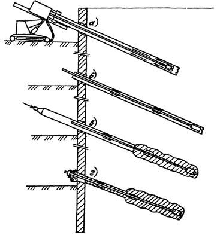
Черт. 12
г) полное извлечение обсадных труб с заполнением скважины цементным раствором;
д) контрольные или приемочные испытания анкера (после набора цементным раствором проектной прочности) и блокировку анкера на строительной конструкции.
а) бурение скважины;
б) установку тяги с изолирующей оболочкой внутрь трубы;
в, г) выполнение работ в соответствии с п. 4.2.1, в, г, д.
4.2.3. Технология устройства анкера в несвязных и связных грунтах с инъекцией цементного раствора через инъекционную трубку (черт. 13, а - е) включает в себя:
а) бурение скважины с обсадной трубой или без нее под глинистым раствором или шнеком в устойчивых грунтах;
б) установку тяги в скважину с изолирующей оболочкой и со стационарной и инвентарной инъекционными трубками в случае несвязных грунтов или заполнение скважин цементным раствором в устойчивых грунтах;
в) заполнение скважины цементным раствором и извлечение инвентарной инъекционной трубки в несвязных грунтах или установку тяги в скважину с изолирующей оболочкой и стационарной инъекционной трубкой в устойчивых грунтах;
г) технологический перерыв в течение суток на твердение раствора в скважине;
д) нагнетание цементного раствора под давлением по стационарной инъекционной трубке после предварительной подачи воды в трубку под давлением для прорыва цементной обоймы;
е) выполнение работ в соответствии с п. 4.2.1, д после набора прочности цементным раствором.
4.2.4. Технология устройства анкера в связных грунтах с разбуриванием уширений (черт. 14, а - д) включает в себя:
а) бурение скважины шнеком на глубину, превышающую длину анкера на 1-1,5 м;
б) разбуривание уширений инвентарным расширителем и удаление шлама;
в) заполнение скважины цементным раствором;
г) установку анкера в скважину;
д) выполнение работ в соответствии с п. 4.2.1, д.
4.2.5. Технология устройства вертикального анкера с вибропогружателем (черт. 15, а - ж) включает в себя:
а) установку анкерной тяги 4 с пятой 6 и уплотняющими кольцами 5 в обсадную трубу 3 и закрепление ее на трубе;
б) присоединение патрубка 2 и наголовника 1 с вибратором к обсадной трубе 3;
Технологическая последовательность устройства анкера с применением инъекционной трубки
Черт. 13
Технологическая последовательность устройства анкера в связных грунтах с разбуриванием уширений
Черт. 14
Технологическая последовательность устройства вертикального анкера с вибропогружателем
Черт. 15
в) погружение вибропогружателем В-401 обсадной трубы на проектную глубину;
г) подъем обсадной трубы на 0,3-0,5 м и подачу цементного раствора 7 в обсадную трубу 3 через штуцер 8 и освобождение обсадной трубы от пяты 6;
д) поинтервальное нагнетание в зону заделки 9 анкера цементного раствора под давлением 1,5-2 МПа после очередного подъема трубы на 0,5 ч;
е) извлечение обсадной трубы;
ж) блокировку анкера на строительной конструкции 10.
4.2.6. Технология устройства временных анкеров с канатной арматурой.
Эта технология аналогична технологии, представленной в пп. 4.2.1, 4.2.2, 4.2.4 и 4.2.5 для анкера без инъекционной трубки, в п. 4.2.3 или 4.2.5 - для анкера с инъекционной трубкой.
Технология устройства временного инъекционного анкера с манжетной трубой при наружном расположении тяги из канатной арматуры
Черт. 16
4.2.7. Технология устройства временного инъекционного анкера с манжетной трубой при наружном расположении анкерной тяги из канатной арматуры (черт. 16, а - е) включает в себя:
а) бурение скважины;
б) погружение анкера в скважину;
в) установку инъектора с двойным тампоном в манжетную трубу против нижних выпускных отверстий и замещение бурового раствора обойменным;
г) установку инъектора с двойным тампоном против манжеты пакера и нагнетание обойменного раствора в пакер под давлением 0,2-0,5 МПа;
д) поинтервальную, начиная с нижней манжеты, инъекцию цементного раствора в зону заделки анкера (после набора обойменным раствором прочности 0,8-1,5 МПа);
е) выполнение работ в соответствии с п. 4.2.1, д.
4.3.1. Технология устройства анкера с манжетной трубой при внутреннем расположении анкерной тяги из канатной арматуры (черт. 17, а - ж) включает в себя:
а) бурение скважины;
б) погружение манжетной трубы в скважину;
в) установку инъектора с двойным тампоном против нижних выпускных отверстий и замещение бурового раствора обойменным;
г) установку инъектора с двойным тампоном против манжеты пакера и нагнетание обойменного раствора в пакер под давлением 0,2-0,5 МПа;
д) поинтервальную, начиная с нижней манжеты, инъекцию цементного раствора в зону заделки анкера;
е) заполнение нижней (замковой) части манжетной трубы цементным раствором;
ж) установку тяги с изолирующей оболочкой внутрь манжетной трубы.
Далее после набора цементным раствором необходимой прочности производится испытание анкера и его блокировка на конструкции, а также нагнетание антикоррозионного состава в свободную часть тяги по трубке 15 (см. пп. 3.3.36 и 3.3.38).
4.3.2. Технология устройства постоянного инъекционного анкера с манжетной трубой и стержневой арматурой для песчаных и пылевато-глинистых грунтов аналогична технологии, представленной в п. 4.3.1, за исключением того, что заполнение антикоррозионным составом свободной части тяги производится на поверхности грунта.
4.3.3. Технология устройства постоянных инъекционных анкеров с упорной трубой и стержневой арматурой для песчаных и пылевато-глинистых грунтов аналогична технологии, представленной в пп. 4.21, 4.22, 4.24 и 4.25 для анкера без инъекционной трубки, в пп. 4.2.3 или 4.2.5 - для анкера с инъекционной трубкой.
Технологическая последовательность устройства постоянного анкера с манжетной трубой при внутреннем расположении тяги из канатной арматуры
Черт. 17
5.1.1. Грунтовые анкеры следует подвергать трем видам испытаний: пробным, контрольным и приемочным.
5.1.2. Пробные испытания следует проводить с целью окончательного выбора типа и конструкции анкеров, отвечающих требованиям проекта в части несущей способности, надежности, долговечности, условиям строительства и стоимости.
5.1.3. Пробные испытания проводятся в полевых и заводских или лабораторных условиях.
5.1.4. Заводские или лабораторные испытания должны включать в себя: испытания на прочность элементов конструкции анкера, материалов и антикоррозионной защиты; отработку технологии изготовления элементов и сборки конструкции, а также антикоррозионной защиты.
5.1.5. Пробные полевые испытания анкеров на выдергивание проводят, как правило, на месте строительства, располагая заделку в грунтовых слоях, намеченных проектом. Отклонение углов наклона анкеров от проектных, как правило, не должно быть более 5°.
5.1.6. Количество анкеров, подвергаемых пробным полевым испытаниям на выдергивание, следует принимать в зависимости от общего количества устанавливаемых анкеров по проекту в каждом слое грунта в следующей пропорции: 1,5 %, но не менее 3 шт. для временных анкеров и 2 %, но не менее 3 шт. - для постоянных.
5.1.7. Часть анкеров, подвергаемых пробным испытаниям на выдергивание, но не менее 2, следует доводить до разрушения с целью установления предельной нагрузки, соответствующей потере несущей способности по грунту.
Для осуществления этих испытаний следует увеличить сечение тяги или уменьшить длину заделки анкера по сравнению с проектными значениями и довести нагрузку до величины Ри, вызывающей напряжения в тяге, равные 0,95sт.
5.1.8. При проведении пробных полевых испытаний на выдергивание следует зафиксировать следующие данные: гидрогеологические и грунтовые условия на месте испытания (деформационные характеристики грунтов следует определять прессиометрическими испытаниями), тип бурового оборудования, продолжительность проходки скважин, количество и вид промывочного бурового раствора; водоцементное отношение и состав цементного и обойменного растворов; марку цемента; количество и вид добавок; тип оборудования для приготовления цементного и обойменного растворов; продолжительность перемешивания; давление нагнетания раствора; количество нагнетаемого раствора по стадиям; метеорологические условия проведения испытаний; полные данные об испытании.
5.1.9. Перед началом испытаний анкеров на выдергивающую нагрузку следует провести аттестацию измерительной аппаратуры (манометры и динамометры) и натяжных устройств (домкрат и маслостанция).
5.1.10. Для контроля усилий натяжения анкера необходимо иметь: рабочий манометр, контрольный манометр для проверки рабочего, эталонный манометр и динамометры механического или электрического действия, с помощью которых можно измерять в течение длительного времени нагрузку на анкер.
5.1.11. Измерение перемещений свободного конца тяги анкера и анкеруемой конструкции (опорной плиты) производят относительно реперного устройства, представляющего собой жесткую раму, расположенную перед анкеруемой плитой (стенкой) на расстоянии 1,5-2 м.
Перемещения свободного конца тяги следует измерять с точностью 0,01 мм с помощью прогибомеров.
5.1.12. При испытании тяг, выполненных из канатной арматуры, для исключения искажения измерений из-за возможного проскальзывания тяг в зажимах следует дублировать измерения перемещений тяг с помощью прогибомеров, измерением перемещений отметок, сделанных на канатах (прядях), относительно втулки, в которую запрессовывается анкер, с помощью кронциркуля или стальной линейки.
5.1.13. После завершения пробных полевых испытаний следует откопать анкеры и установить: состояние и свободную длину анкеров; длину, конфигурацию и размеры заделки, вид и характер разрушения; состояние антикоррозионной защиты; вид грунта и его характеристики.
5.1.14. Контрольные испытания на выдергивающую нагрузку производятся для анкеров, установленных на сооружении, по укороченной программе пробных испытаний с целью установления несущей способности и надежности используемых анкеров в сравнении с опытными анкерами, испытанными при пробных испытаниях.
5.2.1. Пробные испытания следует проводить в две серии ступенчато возрастающей нагрузкой начиная с Р0 = 0,2Ри. Диапазон нагрузок между Р0 и Ри следует разбивать на шесть ступеней Рi. Выдержка во времени на каждой ступени нагрузки в первой серии испытаний принимается равной Dt, во второй серии - 10Dt.
После выдержки нагрузки на каждой ступени производят разгрузку до величины Р0, при которой измеряют упругие (Dlу) и остаточные перемещения (Dls). При следующей ступени нагружения следует регистрировать перемещения головки анкера на каждой промежуточной ступени нагрузки.
5.2.2. Значения Dt следует принимать: для скальных и несвязных грунтов, а также связных c показателем текучести IÐ < 0 - 15 мин, для связных грунтов при значениях 0 £ IÐ £ 1 - 180 мин.
5.2.3. Перемещения головки анкера следует измерять через 1, 3, 5, 7, 10, 15, 20, 30... Dt, (10Dt) мин после достижения заданной нагрузки для данной ступени.
5.2.4. После выдержки на последней ступени нагрузки ее снижают до Р0, замеряют упругие и остаточные перемещения головки анкера и, не менее чем для 2 опытных анкеров, нагрузку доводят до разрушающей, увеличивая нагрузку после Ри ступенями по 0,1 Ри. Для остальных опытных анкеров доводят нагрузку до значения 1,1 Рw и закрепляют анкер на опорной конструкции.
5.2.5. По результатам испытаний определяют: предельную несущую способность анкера по грунту Рк; упругие Dlу и остаточные Dls перемещения; предельную нагрузку Ркр; эффективную свободную длину тяги lff; коэффициент ползучести Кs; предельную нагрузку ползучести грунта Рs.
По графику зависимости между нагрузкой и перемещением (черт. 18) определяют величины Рк, Dlу и Dls.
5.2.6. Для
определения Ркр, строят графики зависимостей между величиной Dl, достигнутой за
время Dt и 10Dt, и нагрузкой на
анкер (черт. 19).
Предельную нагрузку Ркр принимают наименьшей из двух величии 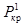 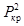
5.2.7. Эффективную свободную длину анкерной тяги lff определяют по формуле
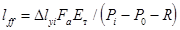
где Dlуi - упругая деформация анкерной тяги, возникающая при действии силы Рi;
R - усилие трения анкерной тяги, определяемое отрезком линии В0 - В1 (черт. 20).
5.2.8. Коэффициент ползучести определяют по формуле
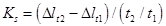
где Dlt1 и Dlt2 - перемещения тяги анкера за периоды времени t1 и t2 соответственно (черт. 21).
5.2.9. Предельную нагрузку Рs, при которой коэффициент ползучести Кs равен 2 мм, определяют по графику (черт. 22), у которого по оси абсцисс откладываются ступени нагрузок, а по оси ординат - соответствующие им коэффициенты ползучести (в мм).
График зависимости между нагрузкой и перемещением анкера при пробных испытаниях
Черт. 18
График зависимости между относительным перемещением и нагрузкой на анкер
Черт. 19
График зависимости между нагрузкой и упругими и остаточными деформациями
Черт. 20
График зависимости деформаций во времени для определения коэффициента ползучести
Черт. 21
График зависимости между коэффициентом ползучести и нагрузкой на анкер
Черт. 22
5.2.10. По результатам определения величины Рк корректируют принятые расчетные величины - длину заделки анкера lк и объем V нагнетаемого в скважину цементного раствора [формулы (6) и (7)]. Рабочая нагрузка Рw и продельные нагрузки Рк, Ркр, и Рs должны находиться в соотношениях: Рw £ 0,5Рк £ 0,9Ркр £ 0,67Рs - для временных анкеров и Рw £ 0,4Рк £ 0,9Ркр £ 0,67Рs - для постоянных анкеров. Значение рабочей нагрузки принимается наименьшее из этих значений.
5.2.11. Эффективная свободная длина анкерной тяги lff при нагрузке Рi £ Ркр должна находиться в пределах
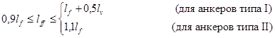
При этих испытаниях после закрепления анкера на опорной конструкции фиксируются блокировочная нагрузка по динамометру и начальное положение опорной конструкции относительно неподвижной точки с помощью теодолита. Блокировочную нагрузку измеряют динамометром один раз в сутки в течение 7 дней и один раз в сутки в последующие дни до тех пор, пока потеря нагрузки не стабилизируется и не станет меньше 5 % блокировочной нагрузки в течение 7 дней. Допускается снижение блокировочной нагрузки на 7 % в течение 3 дней или на 8 % в течение 10 дней.
5.3.1. Контрольные испытания следует проводить ступенчато возрастающей нагрузкой по программе пробных испытаний с той лишь разницей, что испытательная нагрузка на анкер Ри принимается равной 1,5Рw для постоянных анкеров и 1,25Рw - для временных. По результатам испытаний определяют: предельную нагрузку Ркр; эффективную свободную длину тяги lff; коэффициент ползучести Кs; остаточные перемещения анкера Dls и, в случае проведения дополнительных испытаний по п. 5.2.12, величину снижения блокировочной нагрузки с помощью динамометра после закрепления анкера на конструкции. Снижение блокировочной нагрузки должно удовлетворять требованиям п. 5.2.12.
5t3.2. Значения величин Рw и lff должны удовлетворять условиям, поставленным при проведении пробных испытаний. Остаточные перемещения Dls, вызванные нагрузками Рw и Ри, не должны быть больше значений, полученных при пробных испытаниях для соответствующих нагрузок.
5.3.3. Приемочные испытания начинают с нагрузки Р0 = 0,2Ри, при которой фиксируют начальные отсчеты перемещения головки анкера, и доводят до величины Ри, выдерживая ее в течение 15 мин и замеряя перемещение головки анкера через 1, 3, 5, 7, 10 и 15 мин, далее уменьшают нагрузку до величины Р0, замеряют упругое перемещение головки анкера, увеличивают нагрузку до блокировочной и закрепляют анкер на конструкции.
6.3.4. Анкер считается пригодным, если величины Dlу и Dls, вычисленные для нагрузок Ри, а также lff меньше или равны соответствующим величинам, полученным при контрольных испытаниях.
Типичный график приемочных испытаний показан на черт. 23.
График приемочных испытаний
Черт. 23
При несоблюдении этих условий время выдержки на ступени нагрузки Ри следует увеличить до 10Dt. Далее производят сравнение величин Кs, Dls и lff с контрольными. Если результаты не удовлетворяют, то решение о пригодности анкера принимает проектная организация.
6.1. Работы по устройству анкеров необходимо выполнять в соответствии с требованиями СНиП "Техника безопасности в строительстве", "Правил безопасности при геологоразведочных работах" Госгортехнадзора СССР, настоящих ВСН и правил эксплуатации машин, установок, приборов и др., которыми пользуются при устройстве анкеров.
6.2. Работы по устройству анкеров разрешается начинать только при наличии утвержденного проекта производства работ, согласованного со всеми заинтересованными организациями, и разрешения на производство работ специальной инспекции при городском или районном исполкоме.
6.3. При обнаружении во время производства работ не предусмотренных планом подземных коммуникаций необходимо получить от организаций, в ведении которых они находятся, согласие на продолжение строительства.
6.4. К работам по устройству анкеров допускаются лица, сдавшие техминимум по технике безопасности.
6.5. Все рабочие и весь технический персонал в соответствии с утвержденными нормами должны быть снабжены и обязаны пользоваться индивидуальными средствами защиты.
6.6. Безопасность людей, работающих в котловане, должна быть обеспечена специальным ограждением, предохраняющим их от падения случайных предметов в котлован.
6.7. В темное время суток строительная площадка должна иметь освещение, обеспечивающее безопасность работ.
6.8. Трубопроводы и шланги для инъекции растворов необходимо подвергнуть гидравлическим испытаниям под давлением, в 1,5 раза превышающим расчетное.
6.9. Во время натяжения анкеров запрещается стоять за домкратами.
6.10. Посторонним лицам запрещается находиться на строительной площадке.
Обязательное
СНиП II.9.78. Инженерные изыскания для строительства. Основные положения.
СНиП 2.01.07-85. Нагрузки и воздействия.
СНиП 2.02.01-83. Основания и фундаменты.
СНиП 2.02.03-85. Свайные фундаменты.
СНиП 2.03.01-84. Бетонные и железобетонные конструкции. Нормы проектирования.
СНиП 2.03.11-85. Защита строительных конструкций от коррозии.
СНиП 3.02.01-83. Основания и фундаменты.
СНиП 3.04.03-85. Защита строительных конструкций и сооружений от коррозии. Правила производства и приемки работ.
СНиП III-18-75. Металлические конструкции. Правила изготовления, монтажа и приемки.
СНиП III-20-74. Кровли, гидроизоляция, пароизоляция, термоизоляция.
СНиП III-4-80. Техника безопасности в строительстве.
СН 290-74. Инструкция по приготовлению и применению строительных растворов.
СН 301-65. Указания по проектированию гидроизоляции подземных частей зданий и сооружений.
ВСН 98-74 Минтрансстрой СССР. Технические указания по проектированию, изготовлению и монтажу составных по длине конструкций железобетонных мостов.
Справочное
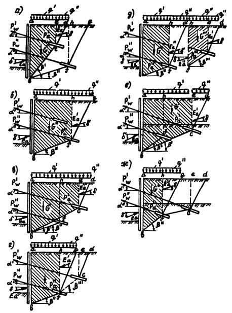
Вариант 1. Верхний анкер
короче нижнего и находится в пределах призмы обрушения авfh (см. чертеж, а,
б). Угол наклона 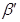 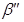
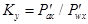
Коэффициент устойчивости по линии скольжения вf (см. чертеж, б) определяют отношением
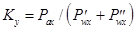
Вариант 2. Верхний анкер длиннее нижнего, но середина его зоны заделки лежит внутри активного клина обрушения нижнего анкера. В этом случае устойчивость по обеим линиям скольжения определяют как для варианта 1.
Вариант 3. Верхний анкер лежит вне пределов активного клина обрушения hfg (см. чертеж в, г). Угол наклона линии скольжения вс больше угла наклона линии скольжения вf. Коэффициент устойчивости по линии скольжения вс составит
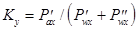
От нижнего анкера могут исходить две линии скольжения вf и вfс (см. чертеж, г). Для первой из них фактическое усилие в верхнем анкере не влияет на призму обрушения авfh, поэтому коэффициент устойчивости по линии скольжения вf определяют по формуле
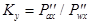
Коэффициент устойчивости по линии скольжения вfс (см. чертеж, д) составит
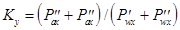
Вариант 4. Площадка сложена сверху слабыми грунтами, поэтому верхний анкер получается настолько длинным (см. чертеж, е), что угол наклона линии скольжения вс меньше угла наклона линии скольжения вf. В этом случае коэффициент устойчивости по линии скольжения вс вычисляют по выражению
.
Коэффициент устойчивости по нижней линии скольжения вf (см. чертеж, ж) определяют по формуле
.
Устойчивость по линии скольжения вfс рассматривать нет необходимости, так как устойчивость по прямой вf менее благоприятна, чем по ломаной вfс.
Справочное
|
Показатель |
СБУ-100-4-35 |
СБА-500 |
СКБ-4 |
ЗИФ-300М |
УВА-1* |
УБВ-6** |
|
Диаметр бурения, мм |
100-151 |
151-250 |
151-250 |
151 |
89-114 |
До 150 |
|
Глубина бурения, м |
25 |
50 |
50 |
50 |
20 |
30 |
|
Угол бурения к вертикали, град |
0-45 |
0-45 |
0-360 |
0-45 |
45-90 |
0-360 |
|
Мощность привода, кВт |
4,0 |
22,0 |
22,0 |
14,0 |
22,0 |
- |
|
Грузоподъемность лебедки, т |
- |
2,0 |
2,0 |
2,0 |
40 |
- |
|
Габаритные размеры, см: |
||||||
|
длина |
218 |
167 |
180 |
422 |
770 |
6330 |
|
ширина |
100 |
113 |
102 |
422 |
130 |
3300 |
|
высота |
273 |
162 |
160 |
194 |
160 |
3705 |
|
Масса, т |
0,5 |
1,32 |
1,80 |
1,38 |
4,0 |
10 |
____________
* Установка вибрационная анкерная - 1 (конструкция ВНИИГС).
** Универсальный буровой станок выпускается Дарницким заводом Главстроймеханизации Минтрансстроя СССР по кооперации с фирмой "Бауэр" (ФРГ).
Справочное
|
Показатель |
РМ-300 |
РM-500 |
РМ-750 |
TURBO-80* |
|
Полезная вместимость, л |
300 |
500 |
750 |
185 |
|
Частота вращения турбины, мин-1 |
350 |
475 |
570 |
600 |
|
Мощность электродвигателя, кВт |
4,5 |
4,5 |
7,5 |
15 |
|
Габаритные размеры, мм: |
||||
|
высота |
1431 |
1544 |
2000 |
1560 |
|
ширина |
1110 |
1158 |
1100 |
2000 |
|
длина |
1393 |
1672 |
1450 |
3800 |
|
масса, т |
0,28 |
0,35 |
0,51 |
1,3 |
_____________
* Выпускается Дарницким заводом Главстроймеханизации Минтрансстроя СССР в комплекте УБВ-6 по кооперации с фирмой "Бауэр" (ФРГ)
Справочное
|
Показатель |
НГР 250/50 |
IIГР |
9МГР |
C3174 |
ГР 16/40 |
НБ-179 |
TURBO-80* |
|
Производительность, м3/ч |
18 |
18; 13,5 |
22; 36; 60 |
6 |
1,9-16 |
1; 8; 3 |
6,0 |
|
Давление, МПа |
5,0 |
5,0; 6,3 |
10,0; 6,0; 3,5 |
1,5 |
4,0 |
До 4,0 |
8,0 |
|
мощность привода, кВт |
38 |
35 |
73 |
7 |
22 |
3 |
1,1 |
|
Габаритные размеры, мм: |
|||||||
|
длина |
1444 |
1870 |
2630 |
1040 |
1340 |
1310 |
1560 |
|
ширина |
876 |
990 |
1040 |
560 |
930 |
750 |
2000 |
|
высота |
932 |
1510 |
1630 |
1000 |
1080 |
500 |
3800 |
|
Масса, т |
0,73 |
1,15 |
1,76 |
0,39 |
0,56 |
0,25 |
1,3 |
Справочное
|
Показатель |
6280С |
ДГC-62-315 |
ДС-30-200 |
CM-537 |
ДГП-230 |
Hop-100 |
HoP-82 |
|
Максимальное тяговое усилие, кН |
1000 |
630 |
300 |
560 |
2300 |
1000 |
820 |
|
Ход поршня, мм |
150 |
315 |
200 |
150 |
330 |
200 |
15 |
|
Диаметр натягиваемой арматуры, мм |
16-40 |
28-40 |
20-28 |
16-42 |
15 |
40 |
40 |
|
Арматура, рекомендуемая для натяжения |
Стержневая, прядевая |
Стержневая, прядевая |
Стержневая |
Стержневая |
Прядевая |
Стержневая |
Стержневая |
|
Габаритные размеры, мм: |
|||||||
|
длина |
1580 |
1000 |
735 |
266 |
- |
- |
- |
|
ширина, диаметр |
1090 |
230 |
157 |
270 |
- |
260 |
- |
|
высота |
2400 |
250 |
223 |
600 |
- |
490 |
- |
|
Масса, кг |
765 |
84 |
31 |
69 |
600 |
69 |
- |
|
Захваты клиновые, шт. |
- |
- |
- |
- |
12 |
- |
- |
Обязательное
Наименование строительной организации
Объект
|
№ анкера |
Тип анкера |
Дата испытания |
Температура воздуха, °С |
Отметка устья скважины (ярус) |
Глубина скважины, м |
Угол наклона к горизонту |
Наименование грунтов в пределах заделки |
|
1 |
2 |
3 |
4 |
5 |
6 |
7 |
8 |
Продолжение
|
Длина анкера, м |
Длина тяги, м |
Материал тяги |
Площадь сечения тяги, см2 |
||||
|
общая |
заделки |
свободной части |
общая |
заделки |
свободная |
||
|
9 |
10 |
11 |
12 |
13 |
14 |
15 |
16 |
Продолжение
|
Состав и количество заказанного раствора: цемента (кг), раствора (м3), % добавок |
Состав обоймы, прочность 7 суток, МПа |
|
|||||||
|
Фазы инъекции |
|
||||||||
|
1-ая |
2-ая |
3-я |
Всего закачено, кг/м3 |
Состав |
Прочность |
|
|||
|
В/Ц, % добавок |
кг/м3 |
В/Ц, % добавок |
кг/м3 |
В/Ц, % добавок |
кг/м3 |
|
|||
|
17 |
18 |
19 |
20 |
21 |
22 |
23 |
24 |
25 |
|
Продолжение
|
Вид антикоррозионной защити |
Рабочая нагрузка Рw, кН |
Испытательная нагрузка Ри, кН |
Блокировочная нагрузка Рd, кН |
Предельная Рs, кН |
|
26 |
27 |
28 |
29 |
30 |
Продолжение
|
Перемещения анкера во времени на ступенях нагрузки Ри, мм |
Общее перемещениеанкера, мм |
Остаточное перемещение при нагрузке Ри, мм |
% остаточной нагрузки от блокировочной через 10 дней |
||||||
|
0,2 |
0,33 |
0,46 |
0,6 |
0,73 |
0,86 |
1,0 |
|||
|
31 |
32 |
33 |
34 |
35 |
36 |
37 |
38 |
39 |
40 |
Окончание
|
Критическая нагрузка Ркр, кН |
Испытания |
Эффективная свободная длина тяги анкера lff, м |
0,9lf |
lf + 0,5lи |
1,1lf |
Коэффициент ползучести Кs при нагрузке Рw, мм |
Примечания |
|
|
контрольные Ри/Ркр |
пробные Ри/Ркр |
|||||||
|
41 |
42 |
43 |
44 |
45 |
46 |
47 |
48 |
49 |
Обязательное
Наименование строительной организации
Объект
|
№ анкера |
Тип анкера |
Дата испытания |
Температура воздуха, °С |
Отметка устья скважины (ярус) |
Глубина скважины, м |
Угол наклона к горизонту |
Наименование грунтов в пределах заделки |
|
1 |
2 |
3 |
4 |
5 |
6 |
7 |
8 |
Продолжение
|
Длина анкера, м |
Длина тяги, м |
Материал тяги |
Площадь сечения тяги, см2 |
||||
|
общая |
заделки |
свободной части |
общая |
заделки |
свободная |
||
|
9 |
10 |
11 |
12 |
13 |
14 |
15 |
16 |
Продолжение
|
Состав и количество заказанного раствора: цемента (кг), раствора (м3), % добавок |
Состав обоймы, прочность 7 суток, МПа |
|||||||
|
Фазы инъекции |
||||||||
|
1-ая |
2-ая |
3-я |
Всего закачено, кг/м3 |
Состав |
Прочность |
|||
|
В/Ц, % добавок |
кг/м3 |
В/Ц, % добавок |
кг/м3 |
В/Ц, % добавок |
кг/м3 |
|||
|
17 |
18 |
19 |
20 |
21 |
22 |
23 |
24 |
25 |
Продолжение
|
Вид антикоррозионной защити |
Рабочая нагрузка Рw, кН |
Испытательная нагрузка Ри, кН |
Блокировочная нагрузка Рd, кН |
Предельная Рs, кН |
|
26 |
27 |
28 |
29 |
30 |
Продолжение
|
Перемещение анкера, мм, при нагрузке во времени, мин |
Остаточное перемещение при приемочных испытаниях, мм |
Остаточное перемещение при контрольных испытаниях, мм |
Общее перемещение анкера при нагрузке Ри, мм |
||||
|
1 |
3 |
5 |
10 |
15 |
|||
|
31 |
32 |
33 |
34 |
35 |
36 |
37 |
38 |
Окончание
|
Эффективная свободная длина тяги анкера lff, мм |
0,9lf |
lf + 0,5lv |
1,1lf |
Коэффициенты ползучести Кs при нагрузках Ри, мм |
Коэффициенты ползучести при нагрузке Ри, мм, при контрольных испытаниях |
Примечания |
|
39 |
40 |
41 |
42 |
43 |
44 |
45 |
СОДЕРЖАНИЕ